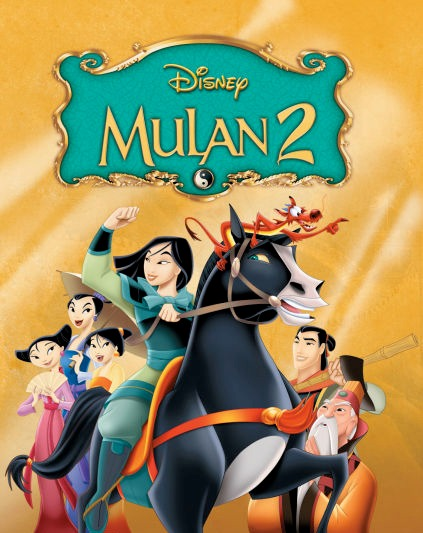

Assim que Mulan aceita a proposta de casamento do General Shang,
seu guardião Mushu teme que ele perca seu lugar na vida dela quando ela
é aceita na família de Shang. O Imperador pede a Mulan e seu noivo
para acompanharem as três princesas para encontrar seus futuros
maridos em um território distante. Durante o percurso de sua
perigosa jornada através da China, Mushu tenta separar o jovem casal e,
ao contrário, o relacionamento se solidifica.
1h 19min
Livre
Animação, ação, comédia, comédia musical
2005